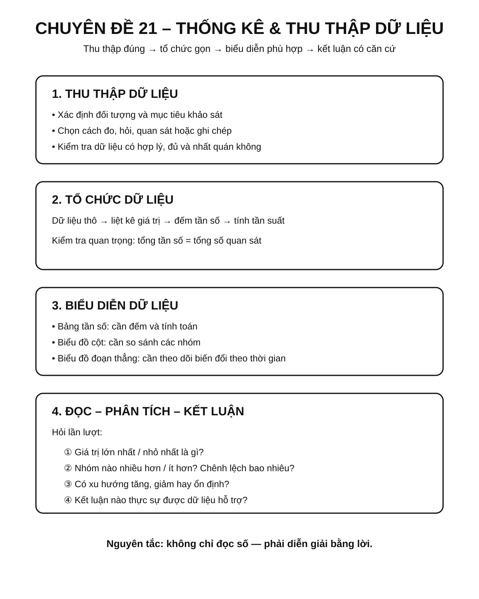
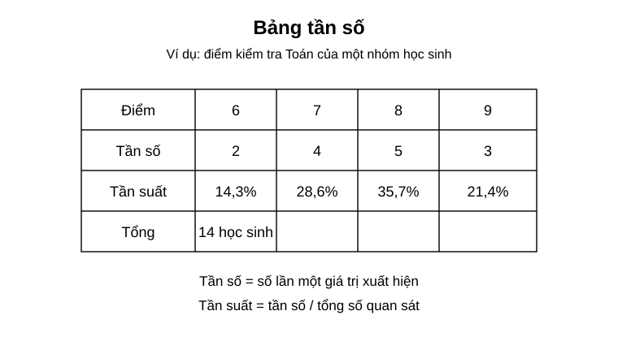
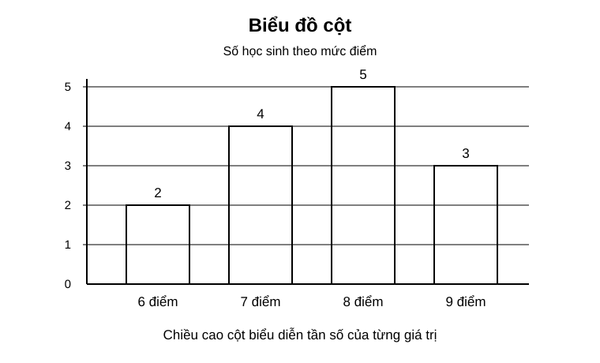
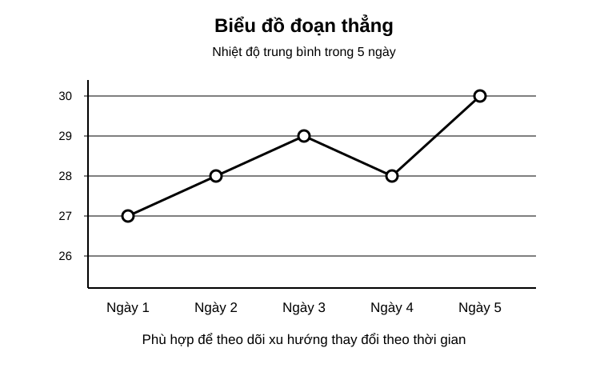
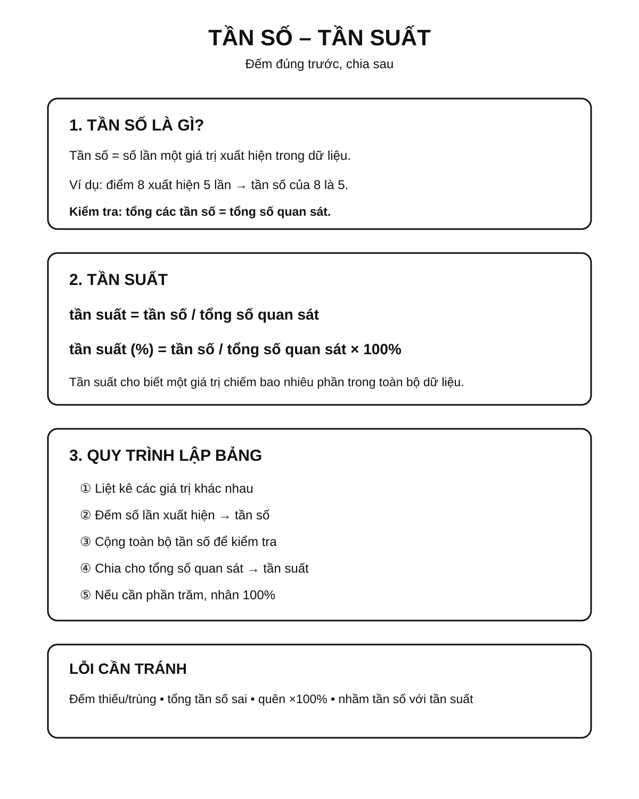
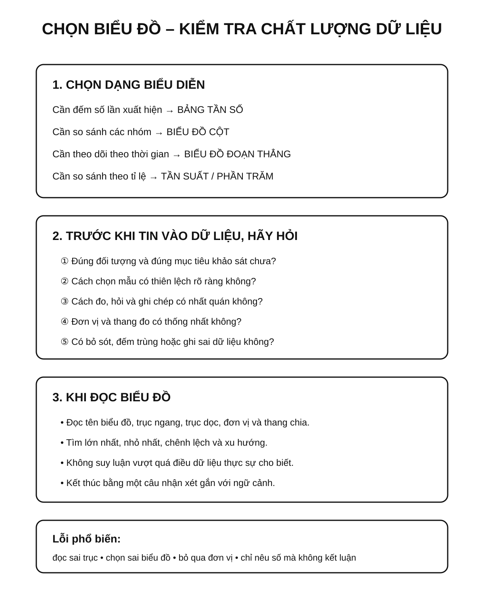

Chuyên đề 21 – Thống kê và thu thập dữ liệu
Trạng thái: Đã kiểm định nội dung học thuật; cấu trúc Roadmap chuẩn 11 mục.
Lớp trọng tâm: 6–9 Mạch kiến thức: Thống kê Mức ưu tiên: ⭐⭐⭐⭐
🧭 1. Bản đồ kiến thức
Infographic tổng quan

THỐNG KÊ & THU THẬP DỮ LIỆU
│
├── Thu thập dữ liệu
│ ├── xác định đối tượng
│ ├── chọn cách thu thập
│ └── kiểm tra tính hợp lý
│
├── Tổ chức dữ liệu
│ ├── bảng dữ liệu
│ ├── bảng tần số
│ └── bảng tần suất
│
├── Biểu diễn dữ liệu
│ ├── biểu đồ cột
│ ├── biểu đồ đoạn thẳng
│ └── biểu đồ phù hợp theo mục tiêu
│
└── Đọc và phân tích
├── lớn nhất / nhỏ nhất
├── xu hướng
└── kết luận từ dữ liệu
Mạch tư duy trọng tâm:
thu thập đúng → tổ chức gọn → biểu diễn phù hợp → đọc chính xác → kết luận có căn cứ.
Minh họa trực quan
1. Bảng tần số

Bảng tần số giúp ta sắp xếp dữ liệu theo từng giá trị và đếm số lần xuất hiện của mỗi giá trị.
Các khái niệm cần nhớ:
- Dữ liệu: các số liệu hoặc thông tin thu thập được;
- Giá trị dữ liệu: các giá trị cụ thể xuất hiện trong bộ dữ liệu;
- Tần số: số lần một giá trị xuất hiện;
- Tần suất: tỉ lệ giữa tần số và tổng số quan sát.
Ví dụ trong bảng trên:
- điểm
8xuất hiện5lần; - tổng số quan sát là
14; - tần suất của điểm
8là5/14 ≈ 35,7%.
2. Biểu đồ cột

Biểu đồ cột thường dùng để so sánh số lượng hoặc tần số giữa các nhóm giá trị khác nhau.
Cách đọc:
- nhìn tên các cột trên trục ngang;
- nhìn chiều cao cột;
- đối chiếu với trục dọc để đọc giá trị;
- so sánh cột cao nhất, thấp nhất và chênh lệch giữa các cột.
Trong ví dụ:
- cột
8 điểmcao nhất, nghĩa là xuất hiện nhiều nhất; - cột
6 điểmthấp nhất, nghĩa là xuất hiện ít nhất.
3. Biểu đồ đoạn thẳng

Biểu đồ đoạn thẳng phù hợp khi ta muốn theo dõi sự thay đổi của dữ liệu theo thời gian.
Cách đọc:
- xác định từng mốc thời gian trên trục ngang;
- đọc giá trị tương ứng trên trục dọc;
- quan sát xu hướng tăng, giảm hoặc giữ nguyên.
Trong ví dụ:
- nhiệt độ tăng từ ngày 1 đến ngày 3;
- giảm ở ngày 4;
- tăng mạnh ở ngày 5.
Khi nào dùng dạng biểu diễn nào?
| Dạng biểu diễn | Phù hợp khi nào? | Điểm mạnh |
|---|---|---|
| Bảng tần số | Cần thống kê dữ liệu gốc | Gọn, dễ tính toán |
| Biểu đồ cột | Cần so sánh các nhóm | Dễ nhìn, trực quan |
| Biểu đồ đoạn thẳng | Cần theo dõi sự thay đổi theo thời gian | Thể hiện xu hướng rõ |
Mẹo làm bài thống kê
- Đọc kỹ đề để xác định dữ liệu là gì.
- Khi lập bảng, phải kiểm tra tổng tần số có đúng bằng số quan sát hay không.
- Khi đọc biểu đồ, luôn xem rõ trục ngang, trục dọc và đơn vị.
- Không chỉ đọc từng giá trị riêng lẻ, mà còn nên nhận xét lớn nhất, nhỏ nhất, xu hướng chung.
- Với bài thực tế, nên viết kết luận bằng lời sau khi đọc xong số liệu.
Quy trình xử lý dữ liệu cơ bản
Thu thập dữ liệu
↓
Sắp xếp dữ liệu
↓
Lập bảng tần số / tần suất
↓
Vẽ biểu đồ phù hợp
↓
Đọc, nhận xét và rút ra kết luận
🎯 2. Mục tiêu cần đạt
Sau khi hoàn thành chuyên đề, học sinh cần:
- [ ] Phân biệt được dữ liệu, giá trị, tần số và tần suất.
- [ ] Biết thu thập và kiểm tra dữ liệu cơ bản.
- [ ] Lập được bảng tần số và tần suất.
- [ ] Đọc chính xác biểu đồ cột và biểu đồ đoạn thẳng.
- [ ] Chọn được dạng biểu diễn phù hợp với mục tiêu.
- [ ] Nhận xét được xu hướng, giá trị lớn nhất, nhỏ nhất và chênh lệch.
- [ ] Viết được kết luận bằng lời từ dữ liệu đã cho.
📖 3. Kiến thức cốt lõi
3.1. Dữ liệu và giá trị dữ liệu
Dữ liệu là thông tin thu thập được từ quan sát, đo đạc, khảo sát hoặc ghi chép.
Ví dụ: - điểm kiểm tra của một lớp; - chiều cao của học sinh; - nhiệt độ theo ngày; - số sản phẩm bán được theo tháng.
Một dữ liệu có thể là số hoặc phân loại.
3.2. Tần số
Tần số của một giá trị là số lần giá trị đó xuất hiện.
Nếu giá trị 8 xuất hiện 5 lần thì tần số của 8 là:
n = 5
Tổng các tần số phải bằng tổng số quan sát.
3.3. Tần suất
Tần suất cho biết một giá trị chiếm bao nhiêu phần trong toàn bộ dữ liệu:
tần suất = tần số / tổng số quan sát
Nếu muốn biểu diễn theo phần trăm:
tần suất (%) = tần số / tổng số quan sát × 100%
3.4. Bảng tần số và bảng tần suất
Quy trình: 1. liệt kê các giá trị khác nhau; 2. đếm số lần xuất hiện; 3. kiểm tra tổng tần số; 4. nếu cần, tính tần suất.
Infographic – Tần số và tần suất

3.5. Biểu đồ cột
Phù hợp khi cần: - so sánh các nhóm; - nhìn nhanh nhóm lớn nhất, nhỏ nhất; - so sánh chênh lệch.
Khi đọc biểu đồ cột phải kiểm tra: - tên biểu đồ; - trục ngang; - trục dọc; - đơn vị; - thang chia.
3.6. Biểu đồ đoạn thẳng
Phù hợp khi dữ liệu thay đổi theo thời gian.
Cần quan sát: - xu hướng tăng; - xu hướng giảm; - điểm cao nhất, thấp nhất; - đoạn thay đổi mạnh.
3.7. Chất lượng dữ liệu
Khi đánh giá dữ liệu cần xem xét: - dữ liệu có đúng đối tượng và đúng mục tiêu khảo sát hay không; - cách chọn đối tượng có hợp lý, tránh thiên lệch rõ ràng hay không; - số lượng quan sát có phù hợp với mục tiêu mô tả hay không; - cách đo, hỏi và ghi chép có nhất quán hay không; - đơn vị có thống nhất hay không; - có bỏ sót, đếm trùng hoặc ghi sai dữ liệu hay không.
Một bảng số liệu được ghi đúng chưa chắc đã đại diện tốt cho toàn bộ nhóm cần nghiên cứu nếu cách chọn mẫu bị thiên lệch.
3.8. Bảng chọn cách biểu diễn
| Mục tiêu | Cách biểu diễn phù hợp |
|---|---|
| Đếm số lần xuất hiện | Bảng tần số |
| So sánh các nhóm | Biểu đồ cột |
| Theo dõi theo thời gian | Biểu đồ đoạn thẳng |
| So sánh theo tỉ lệ | Bảng tần suất / phần trăm |
🔗 4. Kiến thức liên quan
- Kiến thức nên ôn trước: tỉ số, phần trăm và kỹ năng đọc bảng số liệu; có thể xem lại 03 – Tỉ lệ và tỉ lệ thức.
- Liên hệ mạnh: phần trăm, đọc bảng, biểu đồ và diễn giải dữ liệu.
- Chuyên đề sử dụng tiếp: 22 – Các đại lượng đặc trưng của dữ liệu, 24 – Bài toán thực tế
🧩 5. Các dạng bài cần nắm vững
Infographic – Biểu đồ, chất lượng dữ liệu và lỗi sai

Dạng 1. Đọc bảng dữ liệu
Xác định số quan sát, giá trị lớn nhất, nhỏ nhất và số lần xuất hiện.
Dạng 2. Lập bảng tần số
Đếm chính xác số lần mỗi giá trị xuất hiện và kiểm tra tổng.
Dạng 3. Tính tần suất
Dùng:
tần suất = tần số / tổng số quan sát
Dạng 4. Đọc biểu đồ cột
So sánh các nhóm, tính chênh lệch và rút ra nhận xét.
Dạng 5. Đọc biểu đồ đoạn thẳng
Mô tả xu hướng theo thời gian và xác định các giai đoạn tăng/giảm.
Dạng 6. Chuyển đổi giữa bảng và biểu đồ
Từ bảng → vẽ biểu đồ, hoặc từ biểu đồ → lập lại bảng.
Dạng 7. Bài toán thực tế từ dữ liệu
Đọc dữ liệu, tính toán rồi viết kết luận phù hợp với ngữ cảnh.
🚀 6. Dạng bài thi vào lớp 10
Trong Roadmap ôn thi vào lớp 10, thống kê được xếp ở mức ưu tiên cao vừa phải và cần chắc kỹ năng đọc, tính toán và diễn giải dữ liệu.
Các kỹ năng cần chắc: 1. Đọc đúng bảng hoặc biểu đồ. 2. Tính tần số, tần suất, phần trăm. 3. So sánh hai nhóm dữ liệu. 4. Nhận xét xu hướng. 5. Kết hợp với số trung bình, trung vị ở Chuyên đề 22.
Mức ưu tiên ôn thi: ⭐⭐⭐⭐.
⚠️ 7. Lỗi sai thường gặp
| Lỗi sai | Cách tránh |
|---|---|
| Đếm sai tần số | Đánh dấu từng dữ liệu khi đếm |
| Tổng tần số không bằng số quan sát | Luôn kiểm tra dòng tổng |
Quên nhân 100% khi tính tần suất phần trăm |
Phân biệt tần suất dạng số và dạng % |
| Đọc sai trục biểu đồ | Xem kỹ đơn vị và thang chia |
| Nhầm biểu đồ cột với biểu đồ theo thời gian | Xác định mục tiêu dữ liệu trước |
| Chỉ nêu số mà không kết luận | Viết một câu nhận xét theo ngữ cảnh |
📝 8. Luyện tập
Mức 1 – Nhận biết
- Tần số là gì?
- Tần suất được tính như thế nào?
- Biểu đồ đoạn thẳng phù hợp nhất với loại dữ liệu nào?
Mức 2 – Thông hiểu
- Dữ liệu:
6, 7, 8, 8, 9, 8, 7. Hãy lập bảng tần số. - Trong 20 học sinh có 6 học sinh chọn phương án A. Tính tần suất phần trăm.
- Một biểu đồ cột có các giá trị
12, 18, 15, 20. Xác định lớn nhất và nhỏ nhất.
Mức 3 – Vận dụng
- Từ một bảng tần số, hãy chọn dạng biểu đồ phù hợp và giải thích lựa chọn.
- Một biểu đồ nhiệt độ theo 7 ngày có xu hướng tăng rồi giảm. Hãy mô tả bằng lời.
- Từ biểu đồ cột, tính chênh lệch giữa hai nhóm.
Mức 4 – Tổng hợp
- Cho dữ liệu khảo sát của một lớp. Hãy lập bảng tần số, tính tần suất, chọn biểu đồ và viết hai nhận xét.
- Phát hiện một bảng thống kê có tổng tần số không khớp tổng quan sát và nêu cách kiểm tra.
✅ 9. Tự kiểm tra
Hãy tự trả lời không nhìn tài liệu:
- Tần số khác tần suất ở điểm nào?
- Tổng tần số phải bằng đại lượng nào?
- Công thức tính tần suất phần trăm là gì?
- Khi nào nên dùng biểu đồ cột?
- Khi nào nên dùng biểu đồ đoạn thẳng?
- Khi đọc biểu đồ cần kiểm tra những thành phần nào?
- Dữ liệu có thể sai do những nguyên nhân nào?
- Sau khi đọc dữ liệu có nên viết kết luận bằng lời không?
Tiêu chí đạt: đúng ít nhất 7/8 câu và hoàn thành được một bài từ dữ liệu thô đến bảng/biểu đồ.
🔄 10. Liên kết Roadmap
- ← Trước: 20 – Hình học tổng hợp, đo lường và hình khối
- → Tiếp theo: 22 – Các đại lượng đặc trưng
- → Kiến thức nền liên hệ: 03 – Tỉ lệ và tỉ lệ thức
-
→ Liên hệ: 24 – Bài toán thực tế
-
✏️ Luyện tập: Bài tập Chuyên đề 21
- ✅ Tự kiểm tra: Tự kiểm tra Chuyên đề 21
Xem toàn bộ hệ thống tại Blueprint 25 chuyên đề.
🏁 11. Điều kiện hoàn thành
Chuyên đề được xem là hoàn thành khi học sinh:
- [ ] Phân biệt đúng dữ liệu, tần số và tần suất.
- [ ] Lập đúng bảng tần số.
- [ ] Tính đúng tần suất và phần trăm.
- [ ] Đọc chính xác biểu đồ cột và đoạn thẳng.
- [ ] Chọn đúng dạng biểu diễn dữ liệu.
- [ ] Viết được nhận xét có căn cứ.
- [ ] Đạt tối thiểu 7/10 ở bài Tự kiểm tra và chữa xong các câu sai trước khi chuyển sang Chuyên đề 22.